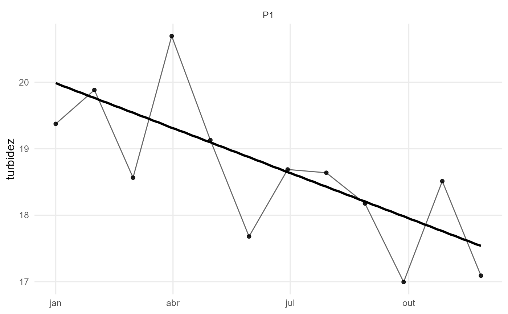
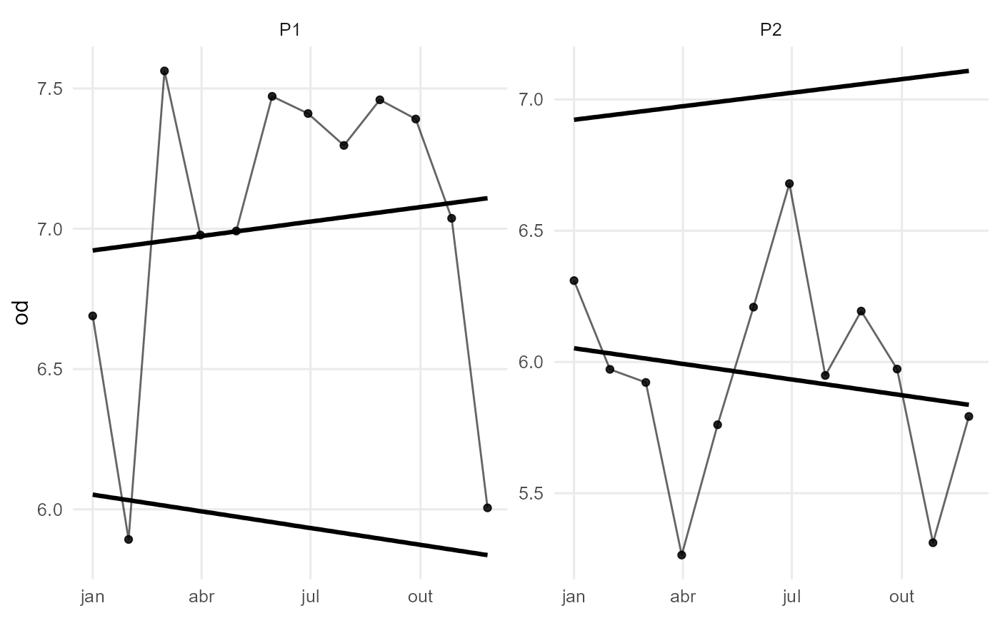

Linha de tendencia temporal para parametros de qualidade da agua
Source:R/plot_trend.R
plot_trend.RdGera um grafico de series temporais com pontos observados e linhas de tendencia ajustadas. Suporta metodos robustos (Theil-Sen), lineares (OLS) ou suavizados (LOESS). Util para verificar tendencias de parametros ambientais por ponto e/ou rio.
Arguments
- data
data.frame. Deve conter ao menos uma coluna de datas e a coluna do parametro a ser analisado.
- param
character. Nome da coluna do parametro (ex.: "turbidez", "iqa").
- date_col
character. Nome da coluna de datas. Default = "data".
- group_cols
character. Vetor com colunas para agrupamento (ex.: c("rio","ponto")). Use "none" para nao facetar. Default = c("rio","ponto").
- method
character. Metodo de ajuste da tendencia:
"theilsen" (padrao): regressao Theil-Sen (robusta a outliers).
"ols": regressao linear simples (minimos quadrados).
"loess": curva suavizada, sem inclinacao unica.
- show_points
logical. Mostrar pontos observados? Default = TRUE.
- min_n
integer. Numero minimo de observacoes por grupo para calcular tendencia. Default = 6.
Details
A funcao desenha pontos e linhas conectando as observacoes, alem da linha de tendencia calculada pelo metodo escolhido.
Quando group_cols possui mais de uma categoria, os grupos sao facetados.
"theilsen" e mais robusto a valores atipicos do que "ols".
"loess" e util quando nao se espera relacao linear no tempo.
Examples
# Exemplo simples: turbidez com tendencia Theil-Sen
set.seed(1)
df <- data.frame(
data = as.Date("2024-01-01") + 0:11*30,
rio = "Demo", ponto = "P1",
turbidez = 20 + (-0.3)*(0:11) + rnorm(12, 0, 1)
)
plot_trend(df, param = "turbidez", method = "theilsen")

# Exemplo com multiplos grupos e facetamento (OLS)
df2 <- data.frame(
data = rep(seq(as.Date("2024-01-01"), by = "30 days", length.out = 12), 2),
rio = rep(c("Rio A","Rio B"), each = 12),
ponto = rep(c("P1","P2"), each = 12),
od = c(7 + rnorm(12, 0, 0.5), 6 + rnorm(12, 0, 0.5))
)
plot_trend(df2, param = "od", method = "ols")
